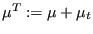
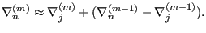
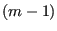

Next: Inlet Up: Conservation of momentum (compressible Previous: Convection term Contents
The diffusion term amounts to
 |
(549) |
which amounts to, taking into account Equations (535) and (536):
where  is the total dynamic viscosity. The first term contains the gradient in normal direction. For face e between elements P and E it is approximated by:
This amounts to the following approximation:
|  | (552) |
This amounts to a deferred correction for the gradient. Terms 2 and 3 of Equation (550) are computed from iteration :
![$\displaystyle \mu^{T(m-1)} (v_{j,i})_f^{(m-1)} (n_j)_f A_f - \frac{2}{3} \left[...
...} (v_{k,k})_f^{(m-1)} + \rho_f^{(m-1)} k_f^{(m-1)} \right ] \delta_{ij} n_j A_f$](img1760.png) |
(553) |
The boundary conditions for the diffusion term deserve special attention. The following cases are distinguished: